|
混乱之战系列(chaos war)
| 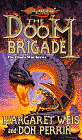 |
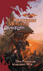 |
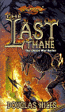 |
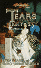 |
| 毁灭旅队(The Doom Brigade) |
龙人的尺度(Draconian Measures) |
最后的领主(the Last Thane) |
夜空之泪(Tears of the Night Sky) |
| 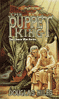 |
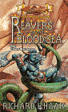 |
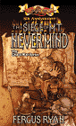 |
|
| 傀儡国王(the Puppet King) |
血海的掠夺者(Reavers of the Blood Sea) |
无关山脉之围(The Siege of Mt. Nevermind) |
|
毁灭旅队马格丽特·魏丝(Margaret Weis)、丹·帕林(Don Perrin)
春晓之巨龙中，在奈拉卡黑暗之后神庙的决战后，有一些龙人军队认识到他们已经失败，于是离开奈拉卡建立自己的国度。但在25年之后（混乱之战即将来临之际），龙人们发现他们正面临着生死存亡的关头，因为所有的龙人都是男性，这样子龙人作为一个种族将无法延续。就在这时他们又接到了黑暗之后的命令去进攻索巴丁。但在矮人的国度里，龙人意外地发现了使他们种族延续下去的方法。于是这些龙人和矮人们结成了最最不可思议的联盟对抗他们共同的敌人。
龙人的尺度马格丽特·魏丝(Margaret Weis)、丹·帕林(Don Perrin)
延续上一本，龙人军团在康(Kang)的率领下护卫着从索巴丁救出来的女龙人之卵前往奈拉卡，希望在那里找到一个容身之所延续种族。但他们的旅途并不宁静，除了地精，其它龙人军团也用背叛和诡计阻碍着他们，而且还有那些他们难以应付的孵化出来的小女龙人……不过，他们最后终于还是找到一座被废弃的城市泰耶(Teyr)，在这里，康成为了自由的龙人城邦的领袖。
最后的领主道格拉斯·奈尔(Douglas Niles)
这本是关于希拉(Hylar)矮人的故事。在混乱之战末期，他们莫名其妙地受到了索巴丁里的德加(Daergar)矮人的攻击，而他们的主力军队正在山外参加混乱之战，于是留下来的矮人不得不奋起守卫他们的家园和生命之树(Life-Tree)。
夜空之泪琳达·P·贝克(Linda P. Baker)、凯斯·帕金森(Keith Parkinson)
在混乱之战中，当帕林和斯蒂尔前往修肯森林时，帕拉丁的神眷之女克莱莎尼亚也踏上了寻找灵魂最深处疑问答案的旅途，因为她已经不能象从前那样清楚地聆听帕拉丁的神喻了。恰在此时，她得到了一块蕴含强大魔力的石头（龙石），令她踏上了危险的前往奈拉卡的旅程，和她一起出发的伙伴有一位变成了老虎的白袍法师唐达(Tandar)，法师的兄弟和妻子，还有一位矮人牧师。如果他们一行人能顺利地抵达奈拉卡的话，那么整个克莱恩都将为之发生改变。顺便说一哈，在故事的最后，克莱莎尼亚找到了新的爱人——不是雷斯林哦。:)
傀儡国王道格拉斯·奈尔(Douglas Niles)
故事发生在灵魂之战前。此时阿尔翰娜和波修士统一西瓦那斯提和奎灵那斯提的努力已经失败，两人双双被精灵参议会放逐。奎灵那斯提的精灵长老们决定让坦尼斯和罗拉娜年幼的儿子吉尔塔斯(Gilthas)继承王位，因为长老们觉得这个带有人类血统的小孩会比较容易控制。然而他们忽略了一个事实，那就是这个小男孩是长枪英雄坦尼斯和罗拉娜的儿子……紫晶发现最近很多网友都爱在同人里穿插大量的政治描写，也不知道这股风是怎么刮起来的，well，这本书里就有大量的政治描写……
血海的掠夺者理查德·A·纳克(Richard A. Knaak)
让我们再回到米诺陶斯人的世界来，不过这次主角不是卡兹，而是他的后辈阿里克斯(Aryx)。身为海盗的他，发现周围的世界陷入了动荡与毁灭之中。稍后，他发现克莱恩已经陷入了名为混乱之战的战事之中，任何人都难以置身事外……
无关山脉之围佛加斯·瑞安(Fergus Ryan)
在混乱之战中，黑暗之后的部队计划征召无关山脉（朱学恒好像译作“别管它山脉”）的侏儒参军作战，但他们没料到一向被克莱恩的人们认为是偏向黑暗的侏儒居然会在一名侏儒英雄的带领下抵抗他们，而且还造出了水蒸气驱动的机器和他们作战！
新时代巨龙系列(Dragons of a New Age)
简·拉比(Jean Rabe)
| 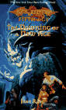 |
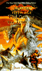 |
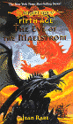 |
| 新时代的曙光(The Dawning of a New Age) |
暴风雨之日(the Day of the Tempest) |
漩涡前夜(The Eve of the Maelstrom) |
新时代的曙光
混乱之战结束后，幸存下来的人面临的是一个完全不同的时代：凡人之纪元。神、魔法都离开了克莱恩。好在籍由帕林，魔法又重新回到了克莱恩，人们计划着在饱受战争蹂躏的大地上重新建设家园，并维持从修玛时代就一直不曾有过的和平。然而新的阴影又悄然袭来，这次，是那些强大的巨龙！
暴风雨之日
这是克莱恩历史上最黑暗的日子。巨龙瓜分了克莱恩世界，各自据地为王，摧毁了所有敢于反抗它们的人。但仍有一些人不愿受奴役，他们在著名的白袍法师帕林的带领下，手持传说中的屠龙枪，开始了对抗巨龙，拯救人类文明的行动。
漩涡前夜
英雄们继续着反抗巨龙的斗争。帕林和乌莎，西尔维亚和吉尔赛那斯继续努力制止邪恶巨龙造成的灾难。当他们胜利时，克莱恩的历史将正式步入第五纪元。
十字路口三部曲(Crossroads)
| 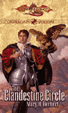 |
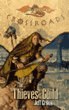 |
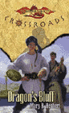 |
| 隐秘的圆周(The Clandestine Circle) |
盗贼行会(The thieves' Guild) |
龙之诈骗(Dragon's Bluff) |
隐秘的圆周玛丽·哈伯特(Mary Herbert)
在龙枪第五纪元后，帕林(Palin)、斯蒂尔(Steel)这些龙枪英雄的子侄辈已经成长为了新一辈的英雄。而现在，他们的子女也要登上克莱恩的历史舞台了。本书的主人公就是帕林和乌莎的女儿林莎(Linsha，显然是把帕林(Palin)和乌莎(Usha)名字的第二个音节拼在一起得来的)。她作为一名索兰尼亚骑士，已经升到了玫瑰骑士阶。此时，塔克西丝的黑骑士想攻占圣克仙城杀掉柏特爵士，而酷得不得了的柏特爵士则操纵圣克仙周围的火山阻挡着黑暗骑士的进攻。城外，还有斯蒂尔的钢铁骑士团，为了拯救陷入战火中的平民而努力。就在这一片混乱之中，林莎作为一名荣誉至上的索兰尼亚骑士，竟然被派到了圣克仙城做间谍！她必须去找出城主柏特爵士的秘密……
盗贼行会杰夫·克鲁克(Jeff Crook)
本书刚在去年(2000年)圣诞节出版，就登上了纽约时报的排行榜。当帕兰萨斯城处于黑暗势力统治之下时，黑暗骑士无情地摧毁了所有的行会组织。但现在，盗贼行会，这个活跃于阴暗处，出没于下水道里的行会想重新建立起他们的势力。就在盗贼行会展开行动的时候，一个叫作凯尔(Cael)的人出现了，他要求加入盗贼行会。和法师一样，他也得接受盗贼的试炼，那就是到危机四伏的下水道中去接受考验。他成功地完成了试炼，恰在此时，有传闻说凯尔就是长枪英雄坦尼斯的儿子!@#$%^&*
龙之诈骗玛丽·哈伯特(Mary Herbert)
本书还未出版。网上的介绍如下：一位长枪英雄的儿子和法师同伴前往佛罗特萨(Flotsam)寻找这位英雄的尸体。他们很快发现他原来并没有死而是失踪了。与此同时，一只红龙正威吓着很多人的生命。就这些了，俺也不清楚这位长枪英雄是谁，也许是卡拉蒙？sigh，资料太少，瞎猜都不行:(
失落的传说系列(Lost Legends)
| 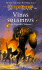 |
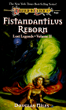 |
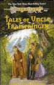 |
| 威纳斯·索兰那斯(Vinas Solamnus) |
费斯坦但提勒斯的再生(Fistandantilus Reborn) |
崔普施普林格叔叔的故事(Tales of Uncle Trapspringer) |
威纳斯·索兰那斯J.罗伯特·金(J.Robert King)
威纳斯·索兰那斯，索兰尼亚骑士的创始人，本书讲述了他的故事，如何进入亚苟斯帝国的军队，如何成为一名骑士，如何逐步升迁成为帝国的执政官 (praetor，这个词是古罗马帝国的用语，实际上亚苟斯帝国就有点儿象古罗马)之一，是如何率领大军前往镇压帝国东部爆发的起义，又是如何认清了帝国的腐败加入到起义军中，最后，如何在战后追寻荣誉的意义，创建了索兰尼亚骑士团。本书中穿插了大量有关龙枪中骑士制度的设定资料，简直可以当作骑士设定指南来看。
费斯坦但提勒斯的再生道格拉斯·奈尔(Douglas Niles)
克莱恩有史以来第二伟大的法师费斯坦但提勒斯（最伟大的当然是雷斯林啦，有不同意的请举手^_^）在很多地方出场过，比如伊斯坦教皇的教庭中，比如雷斯林的试炼中，还比如矮人之门战役中。书上说得很明白，矮人之门战役时他因为施法时被一个侏儒的时空机器干扰而被炸得粉身碎骨，那么他又是如何在几百年后和雷斯林扯上关系的呢？本书就是填补这一段空白的时间，讲述了一名因父母被龙杀死而报仇心切的男孩的灵魂是如何被侵蚀的故事。
崔普施普林格叔叔的故事迪克西·李·马克奎因(Dixie Lee Mckeone)
还记得泰斯老挂在嘴边的崔普叔叔的故事吗？在吊了俺们这么久胃口之后，终于有作者肯大发慈悲讲述这个故事了。不过遗憾的是，网上对此书评价不佳，所以俺最终也没能弄清楚崔普叔叔的故事到底是什么:(
第五纪元传说系列(Tales of the Fifth Age)
玛格丽特·魏丝(Margaret Weis)、崔西·希克曼(Tracy Hickman)
| 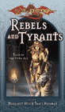 |
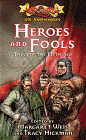 |
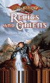 |
| 反抗和暴君(Rebels and Tyrants) |
英雄和笨蛋(Heroes and Fools) |
崩溃和预兆(Relics and Omens) |
反抗和暴君
短篇小说合集，故事都是发生在第五纪元前期，克莱恩各地的人们和压迫他们的恶龙斗争的故事。
英雄和笨蛋
讲述第五纪元的英雄们的故事集。除了玛格丽特和崔西，前面提到的各位龙枪作者也都有作品入选本书。
崩溃和预兆
短篇合集，主要集中在混乱之战结束后到灵魂之战开始前这一段时间中发生的故事。
雷斯林三部曲(Raistlin Chronicles)
| 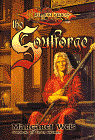 |
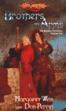 |
??? |
| 灵魂熔炉(The Soulforge) |
手足兄弟(Brothers in Arms) |
??? |
灵魂熔炉玛格丽特·魏丝(Margaret Weis)
作为龙枪系列中最受人喜爱的角色，我们从《黑暗之心》中知道了奇蒂拉是如何救下一出生就羸弱不堪的雷斯林的，而编年史和传奇三部曲中讲述的都是他试炼成功之后的故事，显然在这中间还有一大段空白。谢天谢地这回玛格丽特亲自动手来完成这套故事，没有交给其它作家。套用一句广告，可以说是“魏丝出品，皆为精品”。本书讲述的是从雷斯林六岁到大法师之塔试炼这段时间的故事。籍由雷斯林的视角，我们将和他一起经历父母的故去，奇蒂拉的离去和归来，结识佛林特、泰斯和坦尼斯的经过，以及他和哥哥卡拉蒙真挚的手足之情，他们和同龄的史东一起成长结下的友情。我们见到的是一个和编年史中完全不同的雷斯林，然而玛格丽特巧妙的伏笔又令雷斯林日后的改变非常自然。
手足兄弟玛格丽特·魏丝(Magaret Weis)、丹·帕林(Don Perrin)
本书紧接上一本，讲述雷斯林和卡拉蒙离开故乡，前往外面的世界，并成为佣兵的经历。对自己的魔法天赋已有察觉的雷斯林将在佣兵生涯中学习如何成为一名战斗法师。之后，兄弟俩会遇见同父异母的姐姐奇蒂拉。我们将看到马哲理三姐弟在战斗中的情谊，也将看到残酷的佣兵生涯是如何一点点地影响到雷斯林日后的改变。
时代的桥梁系列(Bridges of Time)
| 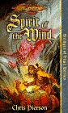 |
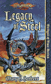 |
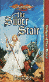 |
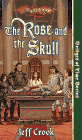 |
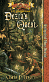 |
| 风之精神(Spirit of the Wind) |
斯蒂尔的遗产(Legacy of Steel) |
银梯(The Silver Stair) |
玫瑰和骷髅(The Rose and the Skull) |
德兹拉的任务(Dezra's Quest) |
风之精神克里斯·皮尔森(Chris Pierson)
本书是作者1999年3月的出道之作。在灵魂之战中，随着龙类控制了安塞隆大陆，势力早已消退的食人魔一族也有重新活跃起来的动向，他们残酷地进攻坎德人的国度，几乎快要令坎德人灭绝了。此时整个克莱恩都陷入了龙的恐怖之中，人人自顾不暇，无人愿意帮助坎德人。已经快走到生命尽头的河风站了出来帮助坎德人对抗食人魔，而且，这位年迈的长枪英雄更计划毁掉恶龙的卵，永远将恶龙从安塞隆驱逐出去。
斯蒂尔的遗产玛丽·哈伯特(Mary Herbert)
在混乱之战中，史东和奇蒂拉的儿子斯蒂尔起先作为黑暗骑士参战，后来又脱离了黑暗的阵营，光荣地战死在混乱之战的最后阶段。因为他的改变，所以黑暗骑士将他的养母莎拉·邓斯坦(Sara Dunstan)打上了背叛者的印记。三年后，莎拉和她的蓝龙克巴特(Cobalt)听到谣传说黑暗骑士又重新在奈拉卡聚集，准备发动一场战争。于是她和克巴特前往奈拉卡查明真相，也希望籍此来平息自从斯蒂尔死后一直难以得到平静的内心。在奈拉卡，莎拉发现谣传说的都是真的，这令她的内心更为混乱，她于是前往索拉斯的长枪英雄的坟墓，希望能找到答案。在那里她确实找到了答案，那就是斯蒂尔曾经用生命为代价得到的同一个答案。由此，莎拉继承了斯蒂尔的遗志，创建了致力于公正的钢铁(Steel)骑士团。
银梯简·拉比(Jean Rabe)
在混乱之战结束后，众神离开了克莱恩，龙类随即夺取了克莱恩的控制权，它们残酷的统治是第五纪元成为了克莱恩历史上最黑暗的时期之一。在第五纪元中期，最后一位长枪英雄金月率领一些同伴，矮人贾斯帕·火炉，西瓦那斯提精灵盖尔(Gair)等人前往斯科西岛(Schallsea Island)，那里的银梯能帮助人重新得到内心的希望与宁静。他们证实了这个传闻，并开始在岛上建设光之基地(the Citidel of Light)，基地的建设使从混乱之战以来克莱恩世界第一次看到了未来的希望之光。然而还有两股势力阻碍着年迈的金月的努力。一个是索兰尼亚骑士，另一个更可怕的反对者来自金月率领的集团内部——一般人认为绝对不会和阴谋挂上钩的来自西瓦那斯提的精灵。
玫瑰和骷髅杰夫·克鲁克(Jeff Crook)
混乱之战九年后，龙类开始从巨龙群岛上向安塞隆大陆进攻。此时安塞隆大陆上最强大的力量是以年老的刚萨·钨斯·威斯坦爵士为首的索兰尼亚骑士团。刚萨爵士也正准备展开一个大胆的计划令索兰尼亚骑士团成为全克莱恩最强大的力量。但就在他施行计划的前夕，一场巨大的灾难降临到了索兰尼亚骑士团头上，令到骑士团几乎全灭，这也直接造成了后来巨龙进攻时人类几乎不能做任何抵抗。而目睹这一惨剧的人全死光了，真相只有一个吓昏了的古力矮人目睹……
德兹拉的任务克里斯·皮尔森(Chris Pieson)
作者的处女作《风之精神》获得成功之后，紧接着于1999年11月推出了此书。上一本《风之精神》讲的是年老的河风要去拯救坎德族，这一回则换成了年老的卡拉蒙要去拯救半人马族。可能作者也意识到了这个问题，所以把故事的主角放在了卡拉蒙的女儿德兹拉身上。和前一本类似，这一回是十年前一个野心勃勃的半人马和混乱之神签下了协议，现在半人马族发现协议的恶果正威胁着整个族群的生存，于是他们派代表前往索拉斯寻找长枪英雄卡拉蒙，希望他能拯救他们。
读者之友系列(Reader's Companion)
| 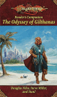 |
| 吉尔赛那斯的冒险史诗(The Odyssey of Gilthanas) |
吉尔赛那斯的冒险史诗道格拉斯·奈尔(Douglas Niles)
吉尔赛那斯和西尔维拉并没有象修玛和吉尼丝那样共赴战场，也没有象修玛和吉尼丝曾经希望的那样隐居起来。因为吉尔赛那斯最后还是不能忍受西尔维拉不是精灵而是一条银龙的事实，从而赶走了她。然而在她走后，吉尔赛那斯才发现西尔维拉才是他真正所爱的人，于是奎灵那斯提的精灵王子开始在安塞隆四处寻找恋人的下落。途中他遇到了许多人，有老朋友也有新伙伴，也经历了很多冒险。身后，还有暗杀者锲而不舍地尾随着他的脚步而来。不过最终，他还是找到了西尔维拉，获得了幸福。
达蒙正史三部曲(Dhamon Saga)
简·拉比(Jean Rabe)
| 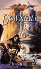 |
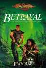 |
??? |
| 衰落(Downfall) |
出卖(Betrayal) |
??? |
衰落
达蒙曾是一名出色的黑暗骑士，但现在他四处游荡，伙同一个小鬼，一个半精灵和一个身兼盗贼和法师的人一起四处抢劫弱者。在别人眼中他已经彻底堕落了。但一名索兰尼亚骑士对他的讨伐使他重新振作了起来，并和他一起开始了新的冒险。对于这部名字奇怪的书，网上的评价是故事不象是龙枪系列，反而更象是失落的国度。
出卖
还是延续上一本书，讲述达蒙继续他的旅程，寻找能治好他的创伤的故事。
冰墙三部曲(Icewall)
| 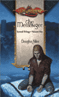 |
??? |
??? |
| 使者(The Messenger) |
??? |
??? |
使者道格拉斯·奈尔
一名西瓦那斯提精灵被族人放逐，他来到了南部的冰墙地区，发现当地的冰原人正和食人魔帝国的残存力量作战。本书是冰墙三部曲的第一部，但一直没有二三部的消息……
独立系列(Standalone)
| 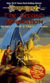 |
| 第二代(The Second Generation) |
第二代玛格丽特·魏丝(Margaret Weis)、崔西·希克曼(Tracy Hickman)
短篇合集。出版于夏焰之巨龙之前，讲述的是当时作者设定的长枪英雄的子女辈的故事，所以难以避免地和以后出版的书籍有些矛盾冲突。但从另一方面讲也可以让读者了解到作者最初的设定是怎么样的。
后记：
到此为止，已经介绍了一百本左右的龙枪系列书籍，这篇介绍性的文字也要就此打住了。可能还有网友看了之后觉得不过瘾，如果大家看了这篇介绍性的文字之后，会去亲自找来龙枪小说读一读，那么紫晶撰写此文的目的也就达到了。需要指出的是，本文题目虽然叫做《龙枪系列小说一览》，但绝不是说这里介绍的小说就囊括了全部的龙枪小说！首先是我自己就不敢保证已经收录了全部已出版的龙枪小说；其次也是更重要的是，龙枪作为一个深受读者喜爱的系列，其小说还在源源不断地陆续推出，从上面的介绍就可以看出，还有很多系列没有出全，而将来，也一定会有新的系列出现。所以，让我们和龙枪的英雄们一道，在克莱恩的世界中，展开奇幻的翅膀，继续令人心动的冒险旅途吧。
|